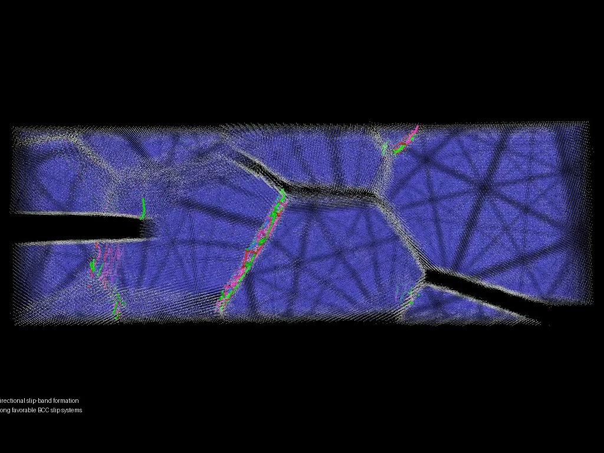

1. Microstructure
Generate grain geometry, orientations, and neighborhood topology with Neper.
Open research software | 2026
A modular workflow for polycrystal generation, grain-dependent BCC slip selection, Frank-Read source initialization, nodal network evolution, and reproducible analysis.
Collective dislocation behavior
The framework follows source bow-out, loop formation, and multiplication in a crystallographically heterogeneous polycrystal. It provides a mesoscale view of how dislocation activity becomes grain dependent and how increasing line density raises the resistance of the evolving network.
The repository separates configuration, crystallography, microstructure handling, network evolution, quantitative metrics, and VTK export into reusable modules with a documented paper example.
Reproducible workflow
Generate grain geometry, orientations, and neighborhood topology with Neper.
Select BCC slip carriers and initialize grain-confined Frank-Read sources.
Evolve the nodal dislocation network under the prescribed loading and mobility model.

